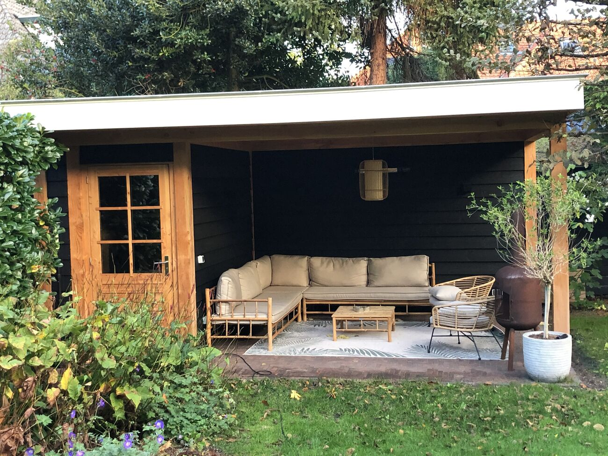
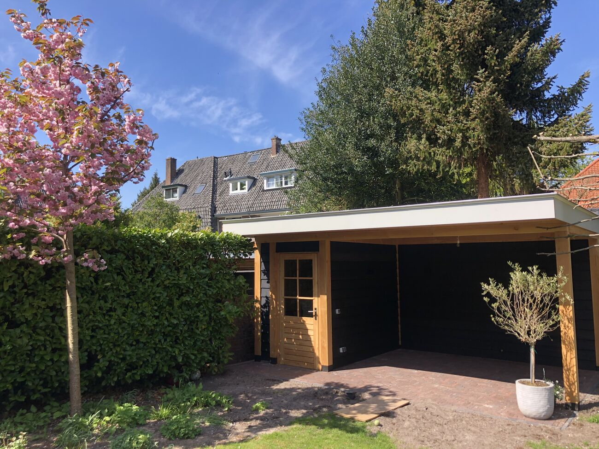
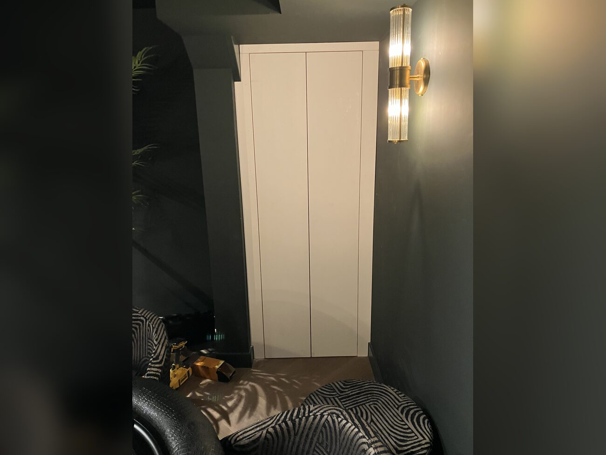
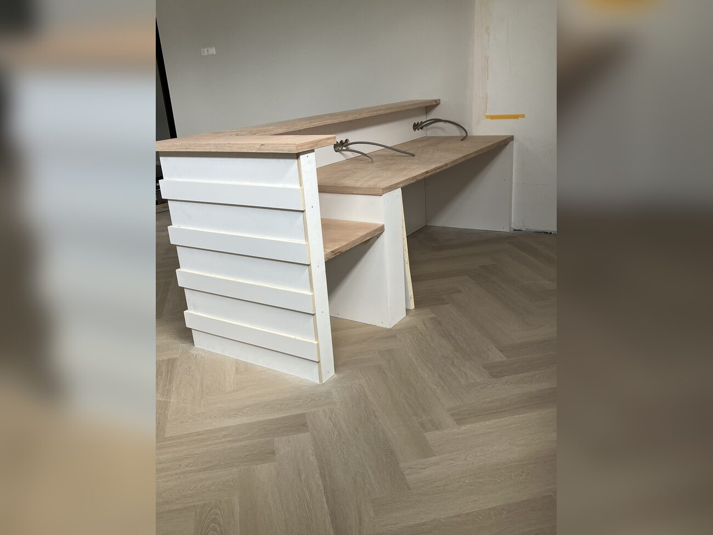
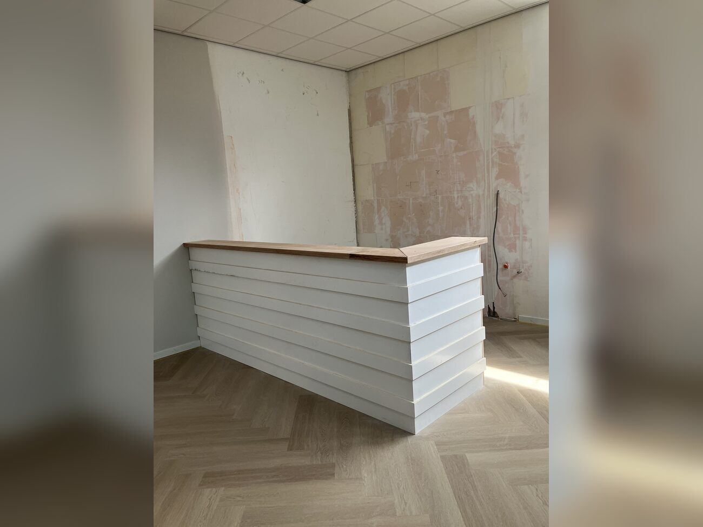
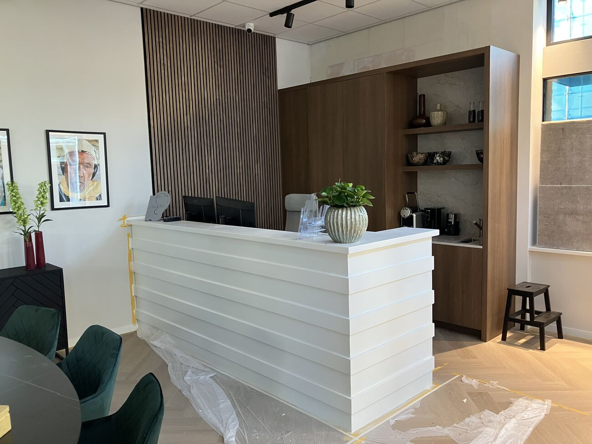
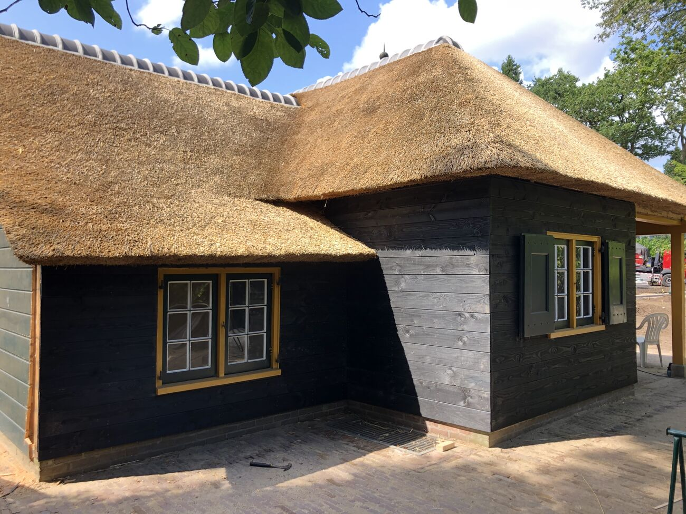
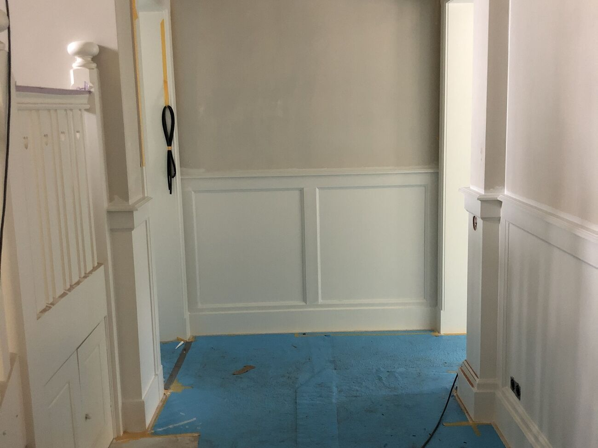
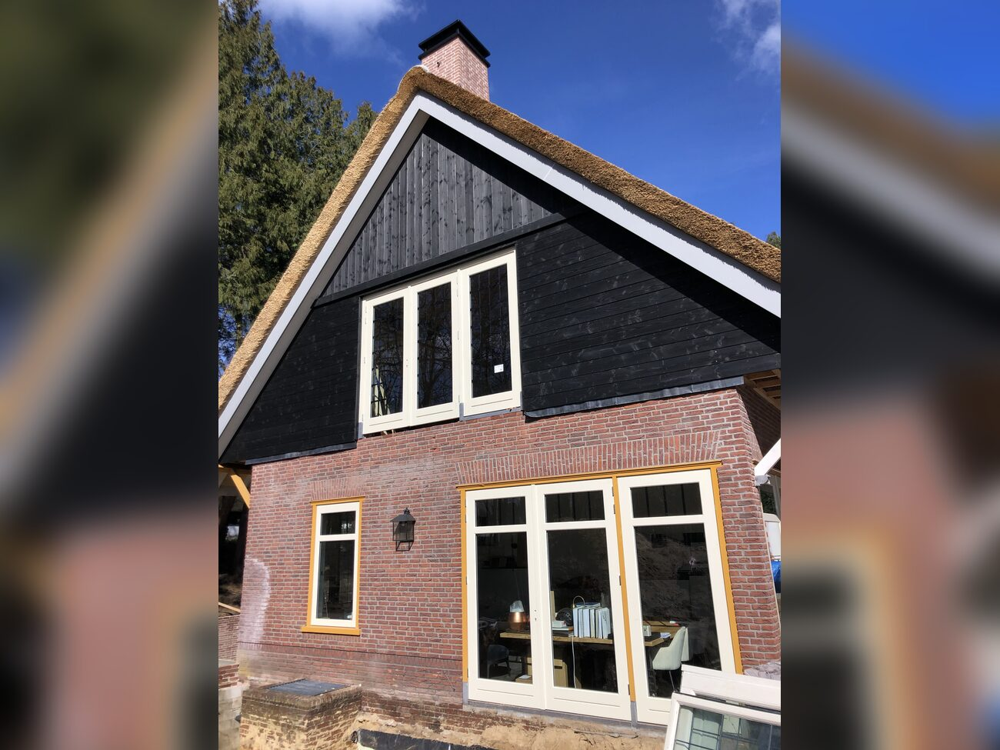

Timmerwerk op maat
Maatwerkoplossingen die volledig worden afgestemd op uw wensen en de beschikbare ruimte.
Werkzaamheden
- Inbouwkasten
- Wandpanelen en lambrisering
- Vensterbanken
- Overige maatwerkoplossingen
Bij JK Houtwerk staan kwaliteit en eerlijk advies centraal. Met ruim 10 jaar ervaring in de bouw en renovatie help ik particulieren en bedrijven met professioneel timmerwerk, maatwerk en duurzaam houtherstel.
Heeft u last van houtrot? Dan kijk ik niet alleen naar de schade, maar geef ik u ook een eerlijk advies over de beste oplossing. Waar mogelijk herstel ik alleen de aangetaste delen, zodat onnodige kosten worden voorkomen.
Naast houtherstel kunt u bij JK Houtwerk ook terecht voor nieuw timmerwerk en maatwerk. Van kleine aanpassingen tot complete timmerprojecten: ik lever vakwerk met oog voor detail en een nette afwerking.
JK Houtwerk – Kwaliteit is onze belofte.
Diensten
Maatwerkoplossingen die volledig worden afgestemd op uw wensen en de beschikbare ruimte.
Werkzaamheden
Duurzaam herstel van houtrot met eerlijk advies en oog voor kwaliteit.
Herstel van houtrot aan
Voor een strakke en verzorgde afwerking van uw woning, met oog voor detail.
Werkzaamheden
Voor het vakkundig plaatsen, vervangen en afwerken van kozijnen en deuren.
Werkzaamheden
Voor duurzaam timmerwerk buitenshuis, uitgevoerd met oog voor kwaliteit en een nette afwerking.
Werkzaamheden









Contact
Laat een bericht achter. We nemen zo snel mogelijk contact met u op.